ചിത്രം ശ്ര≤ിത്ഥൂ. ഹരിതാഭ-മായ കൃഷിഭൂമിയും റോഡും വീടുമൊത്ഥെ കാണുന്നി√േ? അനേകം പേരുടെ പ്രവൃസ്ഥിയുടെ ഫലമ√േ ഇതെ√ാം. എഗ്ലെ√ാം പ്രവൃസ്ഥിക-ളാണ് ഈ ചിത്രസ്ഥിൺ നിത്മƒത്ഥ് കാണാനാവുക? $ ട്രാക്ടയ്യ ഓടിത്ഥുന്നു
$ $ $
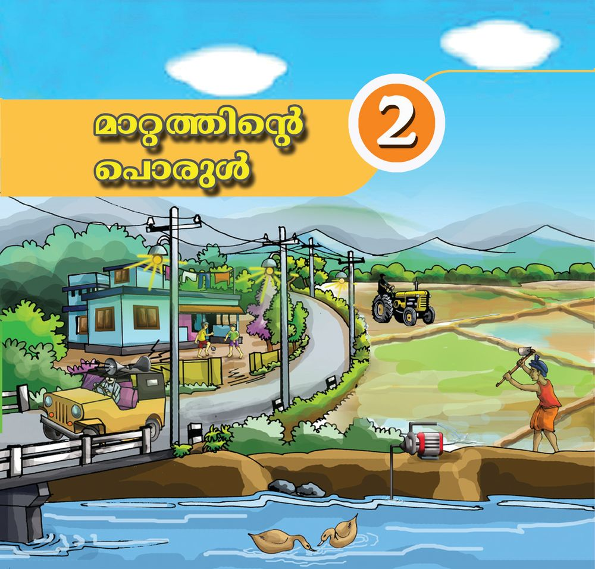

ചിത്രം ശ്ര≤ിത്ഥൂ. ഹരിതാഭ-മായ കൃഷിഭൂമിയും റോഡും വീടുമൊത്ഥെ കാണുന്നി√േ? അനേകം പേരുടെ പ്രവൃസ്ഥിയുടെ ഫലമ√േ ഇതെ√ാം. എഗ്ലെ√ാം പ്രവൃസ്ഥിക-ളാണ് ഈ ചിത്രസ്ഥിൺ നിത്മƒത്ഥ് കാണാനാവുക? $ ട്രാക്ടയ്യ ഓടിത്ഥുന്നു
$ $ $

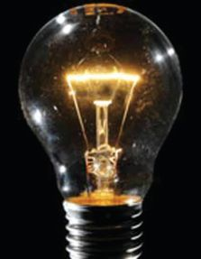
അടി-ÿാനശാസ്ത്രം ˛ ഢക പഗ്ലുക-ളിത്ഥുന്ന കുന്തികƒത്ഥ് ആ പ്രവൃസ്ഥി ചെøാനു≈ കഴിവു വേ≠േ? ഭക്ഷണസ്ഥിൺനിന്നാണ് ഇതിനുവേ≠ ഊയ്യജം ലഭിത്ഥുന്നതെന്ന് നിത്മƒ മുബ്ബു പഠിണ്ണിന്തി√േ? മ‰ു പ്രവൃസ്ഥികƒത്ഥും ഊയ്യജം ആവശ്യമി√േ?
എ√ാ-‰ിനും ഊയ്യജ-ം പകൺസമയസ്ഥ് എ√ാം കാണാ≥ സൂര്യപ്രകാശം നΩെ സഹായിത്ഥുന്നു. പ്രകാശം ഒരു ഊയ്യജരൂപമാണ-√ോ. രാത്രി- ഈ ആവശ്യസ്ഥിന് വൈദ്യുതി ഉപയോഗിണ്ണ് പ്രകാശം ഉ≠ാത്ഥുക-യാണ√ോ നാം ചെøുന്നത്. ഭക്ഷണം പാകം ചെøാ≥ താപം ഉപയോഗിത്ഥുന്നു. ഫാ≥ പ്രവയ്യസ്ഥി-∏ിത്ഥാ≥ വൈദ്യുതോയ്യജസ്ഥെയാണ് ആശ്രയിത്ഥുന്നത്. ചിത്രസ്ഥിൺ സൂചി-∏ിണ്ണ പ്രവൃസ്ഥികƒത്ഥ് ഏതെ√ാം ഊയ്യജരൂപ-ത്മളാണ് ഉപ-േയാഗിത്ഥുന്നത്? ഏതെ√ാം ഊയ്യജരൂപ-ത്മള-ാണ് നിത്മƒത്ഥ് തിരിണ്ണറിയാനാവുന്നത്? പന്തിക പൂരി-∏ിത്ഥൂ. സμയ്യഭം
ഉപയോഗിത്ഥുന്ന ഊയ്യജരൂപം
മോന്തോയ്യവാഹന-ത്മƒ പ്രവയ്യസ്ഥിത്ഥുന്നു.
ഇ'-നത്മളിൺനിന്ന് ലഭിത്ഥുന്ന ഊയ്യജം.
തുണി ഉണത്ഥുന്നു. ബƒബുകƒ പ്രകാശിത്ഥുന്നു. ഉണ്ണഭാഷിണി പ്രവയ്യസ്ഥിത്ഥുന്നു. താപം, വൈദ്യുതി, പ്രകാശം, ശബ്ദം എന്നിവ-യെ√ാം വിവിധ ഊയ്യജരൂപ-ത്മളാണ്. ബƒബ് പ്രകാശിത്ഥുബ്ബോƒ പ്രകാശോയ്യജം മാത്രമാണോ ഉ≠ാവുന്നത്? അൺ∏നേരം പ്രകാശി-∏ിണ്ണശേഷം ഓഫാത്ഥിയ ബƒബി‚െ ചി√് വിരലുകൊ≠് ശ്ര≤ാപൂയ്യവം തൊന്തുനോത്ഥൂ. എഗ്ലാണ് അനുഭ-വ-∏െന്തത്? ബƒബ് പ്രകാശിണ്ണുകൊ≠ിരിത്ഥുബ്ബോƒ ഏതെ√ാം ഊയ്യജരൂപത്മളാണ് ഉ≠ായത്? ഇതിൺ ഏത് ഊയ്യജരൂപമാണ് നാം പ്രയോജ-ന-∏െടുസ്ഥുന്നത്? ഒന്നിൺത്ഥൂടുതൺ ഊയ്യജരൂപ-ത്മƒ ഉ≠ാവുന്ന വേറെയും സμയ്യഭത്മƒ ഇ√േ?
18

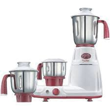
അടി-ÿാന-ശാസ്ത്രം ˛ ഢക
ഊയ്യജസ്ഥി‚െ വിവിധ രൂപത്മƒ പന്തിക-യിൺ വിവിധ സμയ്യഭത്മƒ നൺകിയിരിത്ഥുന്നു. ഓരോ സμയ്യഭസ്ഥിലും ഉ≠ാവുന്ന ഊയ്യജരൂപത്മളും നാം ഉപയോഗിത്ഥുന്ന ഊയ്യജരൂപവും ഏതെന്ന് ക≠െസ്ഥി എഴുതൂ. സμയ്യഭം
ഉ-≠ാവുന്ന ഊയ്യജരൂപത്മƒ
നാം പ്രയോജ-ന-∏െടുസ്ഥുന്ന ഊയ്യജരൂപം
ടോയ്യണ്ണ് പ്രകാശിത്ഥുന്നു. മെഴുകുതിരി കസ്ഥുന്നു. അടു-∏ിൺ വിറക് കസ്ഥുന്നു. വൈദ്യുതബƒബ് പ്രകാശിത്ഥുന്നു. പടത്ഥം പൊന്തുന്നു. മുകളിൺ സൂചി-∏ിണ്ണ എ√ാ പ്രവൃസ്ഥികƒത്ഥും ഊയ്യജം വേണമ-√ോ. ഉ≠ാവുന്ന ഊയ്യജരൂപ-ത്മƒ എ√ാം നാം പ്രയോജ-ന-∏െടുസ്ഥുന്നു≠ോ? നിത്മളുടെ നിഗമനം ശാസ്ത്രപുസ്തക-സ്ഥിൺ എഴുതൂ. ചില ഊയ്യജരൂപത്മƒ നാം പരിച-യ-∏െന്ത√ോ. താഴെ പറയുന്ന സμയ്യഭത്മളിൺ ഏതെ√ാം ഊയ്യജരൂപത്മളാണ് ഉ≠ാവുന്നത്? ഉ≠ാവുന്ന ഊയ്യജരൂപ-ത്മƒ നം സμയ്യഭം (ശ)
(ശശ)
(ശശശ)
1
പൂസ്ഥിരി കസ്ഥുന്നു.
താപോയ്യജം
˛
˛
2
മോന്തോയ്യസൈത്ഥിƒ ഓടിത്ഥുന്നു.
˛
˛
യാഗ്ല്രികോയ്യജം
3
മിക്സി പ്രവയ്യസ്ഥിത്ഥുന്നു.
˛
˛
˛
4
ഇലക്ട്രിക് മോന്തോയ്യ പ്രവയ്യസ്ഥിത്ഥുന്നു.
˛
˛
മിക്സി പ്രവയ്യസ്ഥിത്ഥുബ്ബോƒ ഉ≠ാവുന്ന ഊയ്യജരൂപ-ത്മƒ ക≠െസ്ഥിയ-√ോ. മിക്സി പ്രവയ്യസ്ഥിത്ഥാ≥ ഏത് ഊയ്യജരൂപമാണ് ഉപയോഗ-∏െടുസ്ഥുന്നത്? വൈദ്യുത-ബƒബിൺ വൈദ്യുതോയ്യജം ഏതെ√ാം ഊയ്യജരൂപ-ത്മളായി മാറുന്നുവെന്ന് നാം ക≠√ോ. 19


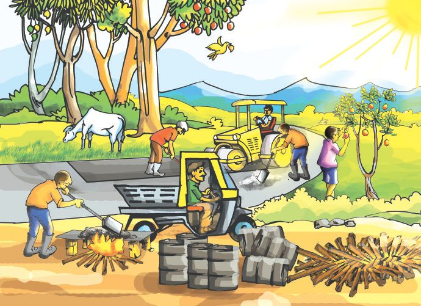
അടി-ÿാനശാസ്ത്രം ˛ ഢക ഊയ്യജം ഒരു രൂപസ്ഥിൺനിന്ന് മ‰ൊരു രൂപസ്ഥിലേത്ഥു മാ‰ാം. മിക്സിയും മോന്തോറും പ്രവയ്യസ്ഥി-∏ിത്ഥാ≥ വൈദ്യുതോയ്യജമാണ് നാം ഉപയോഗിത്ഥുന്നത്. പൂസ്ഥിരി കസ്ഥുന്നതിനും മോന്തോയ്യ സൈത്ഥിƒ പ്രവയ്യസ്ഥിത്ഥുന്നതിനും ഏത് ഊയ്യജരൂപമാണ് ഉപയോഗിത്ഥുന്നത്? വായന-ത്ഥുറി∏് ഉപയോഗ-∏െടുസ്ഥി ക≠െസ്ഥലുകƒ ശാസ്ത്രപുസ്തക-സ്ഥിൺ എഴുതൂ.
യാഗ്ല്രികോയ്യജം വൈദ്യുതോയ്യജമോ ഇ'-നത്മƒ കസ്ഥുബ്ബോƒ ഉ≠ാവുന്ന ഊയ്യജമോ എഞ്ചി≥ പ്രവയ്യസ്ഥിത്ഥുന്നതിനും അതുവഴി യഗ്ല്രഭാഗ-ത്മƒ ചലിത്ഥുന്നതിനും കാരണ-മാകുന്നു. യഗ്ല്രത്മളുടെ പ്രവയ്യസ്ഥനസ്ഥി ലൂടെയു≈ യാഗ്ല്രികോയ്യജമാണ് വാഹനത്മളെ ചലി-∏ിത്ഥുന്നത്.
രാസോയ്യജം പദായ്യഥത്മളിൺ അടത്മിയിരി- ത്ഥ ഉന്ന ഊയ്യജ- മ ആണ് രാസോയ്യജം. പ്രകാശ സംട്ടേഷണം വഴി സസ്യത്മƒ സൗരോയ്യജസ്ഥെ രാസോയ്യജമാത്ഥി മാ‰ുന്നു. ഇത്മനെ സംഭ- ര ഇ- ത്ഥ ഉന്ന രാസോയ്യജം ആഹാ- ര - പ ദായ്യഥത്മളിലൂടെ ജീവികളിൺ എസ്ഥുന്നു. വിറകു കസ്ഥുബ്ബോƒ ലഭിത്ഥുന്നത് സസ്യഭാഗ-ത്മളിൺ സംഭരിത്ഥ-∏െന്ത രാസോയ്യജമാണ്. എ√ാ വസ് ത ഉ- ത്ഥ - ള ഇലും രാസോയ്യജമു-≠്.
20


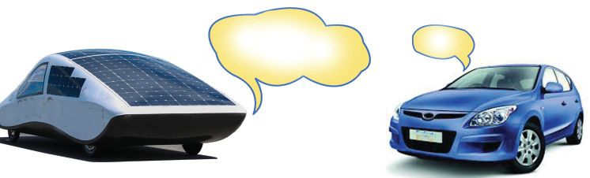
അടി-ÿാന-ശാസ്ത്രം ˛ ഢക ഞാ≥ സൗരോയ്യജം ഉപയോഗിണ്ണാണ് ഓടുന്നത്.
സോളായ്യ കായ്യ
$
ഞാനും
പെട്രോƒ കായ്യ
പെട്രോƒ, ഡീസൺ വാഹന-ത്മƒ എത്മനെയാണ് ഊയ്യജസ്ഥിന് സൂര്യനെ ആശ്രയിത്ഥുന്നത്? ഫോസിൺ ഇ'-നത്മളെത്ഥുറിണ്ണ് പഠിണ്ണിന്തു-≠-√ോ. കൺത്ഥരി
ഫ്ളോചായ്യന്ത് പൂയ്യസ്ഥിയാത്ഥൂ.
ഫോസിൺ ഇ'നം
സൂര്യ≥
എത്രയെത്ര മാ‰-ത്മƒ!
എൺ.-പി.ജി.
ഊയ്യജമാ-‰-ത്മƒ നിത്യജീവിത-സ്ഥിൺ നാം എത്രമാത്രം പ്രയോജ-ന-∏െടുസ്ഥുന്നു≠്? ഗായ്യഹിക ഊയ്യജോപ-യോഗ-ത്മളെ നമുത്ഥൊന്ന് പന്തിക-∏െടുസ്ഥിനോത്ഥാം. സμയ്യഭം
സംഭവിത്ഥുന്ന ഊയ്യജമാ-‰-ത്മƒ
ബƒബ് പ്രകാശിത്ഥുന്നു.
വൈദ്യുതോയ്യജം പ്രകാശം+താപം
വെ≈ം എടുത്ഥുന്നതിനായി മോന്തോയ്യ പ്രവയ്യസ്ഥി-∏ിത്ഥുന്നു.
.................................... .................+.................
തീ∏െന്തിത്ഥൊ≈ി കസ്ഥിത്ഥുന്നു. മിക്സി പ്രവയ്യസ്ഥിത്ഥുന്നു. റേഡിയോയിൺ വായ്യസ്ഥ കേƒത്ഥുന്നു. കൂടുതൺ സμയ്യഭത്മƒ ചേയ്യസ്ഥ് പന്തിക വിപുല-മാത്ഥുമ-√ോ. നിത്യജീവിത-സ്ഥിൺ നാം കൂടുതൺ ഉപയോഗിത്ഥുന്ന ഊയ്യജരൂപ-ത്മƒ ഏതെ-√ാമാണ്? ഊയ്യജം പരമാവധി ഉപയോഗ-∏െടുസ്ഥാ≥ ഉപക-രണ-ത്മളിൺ ഊയ്യജനഷ്ട-ം കുറയ്ത്ഥേ-≠തു-≠്. 21


അടി-ÿാനശാസ്ത്രം ˛ ഢക ജനറേ-‰യ്യ പ്രവയ്യസ്ഥി-∏ിണ്ണ് നടസ്ഥുന്ന വിവിധ പ്രവൃസ്ഥികƒ നിത്മƒത്ഥറിയാമ-√ോ. ഓരോ പ്രവൃസ്ഥിയിലും ഉപയോഗിത്ഥുന്ന ഊയ്യജരൂപ-ത്മളും ഉ≠ാകുന്ന ഊയ്യജരൂപ-ത്മളും ഇവയിൺ നടത്ഥുന്ന ഊയ്യജമാ-‰-ത്മളും താഴെ കാണുന്ന ആശയചിത്രീക-രണ-സ്ഥിൺ രേഖ-∏െടുസ്ഥൂ. ഉപയോഗിത്ഥാതെ പോകുന്ന ഊയ്യജരൂപ-ത്മƒ ഏതെ-√ാമാണെന്ന് ക≠െസ്ഥൂ.
ഇ'നം കസ്ഥുന്നു രാസോയ്യജം
ജനറേ-‰യ്യ പ്രവയ്യസ്ഥിത്ഥുന്നു
(പ്രയോജ-ന-∏െടുസ്ഥുന്നി-√)
മിക്സി പ്രവയ്യസ്ഥിത്ഥുന്നു
(പ്രയോജ-ന∏െടുസ്ഥുന്നു)
22
(പ്രയോജ-ന-∏െടുസ്ഥുന്നി-√)
ഫാ≥ കറത്മുന്നു
ബƒബ് കസ്ഥുന്നു
(പ്രയോജ-ന-∏െ- (പ്രയോജ-ന-∏െ- (പ്രയോജ-ന-∏െടു- (പ്രയോജ-ന- (പ്രയോജ-ന-∏െടുസ്ഥുന്നി-√) ടുസ്ഥുന്നു) സ്ഥുന്നി-√) ∏െടുസ്ഥുന്നു) ടുസ്ഥുന്നി-√)


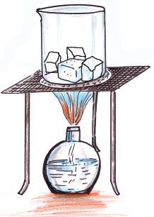
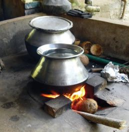
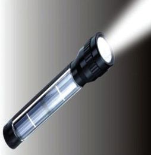
അടി-ÿാന-ശാസ്ത്രം ˛ ഢക ചിത്രത്മƒ പരിശോധിത്ഥൂ
$
ഓരോ സμയ്യഭസ്ഥിലും ഏത് ഊയ്യജരൂപ-മാണ് മാ‰-സ്ഥിന് വിധേയ-മാവുന്നത്? ഏതെ√ാം ഊയ്യജരൂപ-ത്മളാണ് ഉ≠ാവുന്നത്? (1) ............................., (2) ............................,
$ $ $
(3) ............................,
പ്രകാശോയ്യജം ഉപയോഗ-മി-√ാസ്ഥ സμയ്യഭം ചിത്രസ്ഥിൺ ഏതാണ്? ശബ്ദോയ്യജം ഉ≠ാവുന്ന സμയ്യഭം ഏതാണ്? ഏതു സμയ്യഭസ്ഥിലാണ് താപോയ്യജം പ്രയോജ-ന-∏െടുസ്ഥുന്നത്?
ഒരു ഊയ്യജരൂപം പല ഊയ്യജരൂപ-ത്മളായി മാറുന്ന വിവിധ സμയ്യഭത്മƒ ഉ≠് എന്ന് നാം മന- ഇലാത്ഥി. ഊയ്യജം സ്വീകരിത്ഥുബ്ബോƒ വസ്തുവിന് എഗ്ലു മാ‰-മാണ് സംഭവിത്ഥുന്നത്?
എെസ് ഉരുകുബ്ബോƒ താഴെ പറയുന്ന പരീക്ഷണം ചെയ്ത് നിരീക്ഷണ-ത്മƒ എഴുതൂ. എെസ്കന്തകƒ ചിത്രസ്ഥിൺ കാണുന്നതുപോലെ ബീത്ഥറിൺ എടുസ്ഥ് ചൂടാത്ഥൂ. എഗ്ലെ√ാം മാ‰-ത്മളാണ് നിരീക്ഷിണ്ണത്?
$ $ മാ‰-ത്മƒത്ഥ് വിധേയ-മാവാ≥ എെസ് ഏത് ഊയ്യജരൂപ-മാണ് സ്വീകരിണ്ണത്?
$ എെസ് ഉരുകി ലഭിണ്ണ ജലം വീ≠ും ചൂടാത്ഥൂ. മാ‰-ത്മƒ കുറിണ്ണു- വയ്ത്ഥൂ.
$ നീരാവിയെ വീ≠ും ജലമാത്ഥി മാ‰ാമോ? ഇതിനായി ഈ പരീക്ഷണസ്ഥിൺ എഗ്ലു മാ‰-മാണ് വരുസ്ഥേ-≠ത്?
23


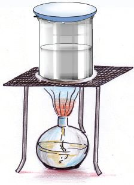
അടി-ÿാനശാസ്ത്രം ˛ ഢക ചിത്രം പരിശോധിണ്ണ് ഏതെ√ാം സാമഗ്രികƒ ഈ പരീക്ഷണ-സ്ഥിന് ഉപയോഗിത്ഥാം എന്ന് ചയ്യണ്ണചെ-øൂ. ഒരു എെസ്കന്ത വാണ്ണ്•ാസിൺ വണ്ണ് പരീക്ഷണം കൂടുതൺ ഫലപ്രദമാത്ഥാമോ? ഈ പരീക്ഷണ-സ്ഥിലൂടെ നീരാവിയെ വീ≠ും ജലമാത്ഥി മാ‰ിയ√ോ. ജലസ്ഥെ വീ≠ും എെസ് ആത്ഥി മാ‰ാമോ? ഇതിനായി എഗ്ലു മായ്യഗ-ം സ്വീകരിത്ഥാം? എെസ് താപോയ്യജം സ്വീകരിണ്ണ് ദ്രാവകാവ-ÿ-യിലു≈ ജലമായി മാറുന്നു. ജലം വീ≠ും താപോയ്യജം സ്വീകരിണ്ണ് വാതകാവ-ÿ-യിലു≈ നീരാവിയായി മാറുന്നു. നീരാവി താപോയ്യജം നഷ്ട-∏െടുബ്ബോƒ ജലമായും വീ≠ും താപോയ്യജം നഷ്ട-∏െടുബ്ബോƒ എെസ് ആയും മാറുക-യാണ് ചെøുന്നത്.
അവ-ÿാമാ‰ം വസ്തുത്ഥƒ മതിയായ അളവിൺ താപോയ്യജം സ്വീകരിത്ഥുബ്ബോഴും പുറസ്ഥുവിടുബ്ബോഴും അവÿാമാ‰-സ്ഥിനു വിധേയ-മാവുന്നു. താപോയ്യജം സ്വീകരിണ്ണ് ഖരാവ-ÿ-യിൺനിന്ന് ദ്രാവകാവ-ÿ-യിലേത്ഥും തുടയ്യന്ന് വാതകാവ-ÿ-യിലേത്ഥും മാറുന്നു. ഊയ്യജം പുറസ്ഥുവിന്ത് വാതകാവ-ÿ-യിലു≈ വസ്തുത്ഥƒ ദ്രാവകാവÿ-യിലേത്ഥും തുടയ്യന്ന് ഖരാവ-ÿ-യിലേത്ഥും മാറുന്നു. ജല- സ്ഥ ഇ‚െ അവ- ÿ ആ- മ ആ- ‰ - ത്മ ƒത്ഥായി താപം പ്രയോ- ജ - ന - എ∏- ട ഉ- സ്ഥ ഇ- യ ത് താഴെ ഫ്ളോചായ്യന്തിൺ രേഖ-∏െടുസ്ഥൂ.
താപം സ്വീകരിത്ഥുന്നു എെസ്കന്ത
˛˛-˛-˛-˛-˛-˛-˛-˛-˛-˛-˛˛ ˛˛-˛-˛-˛˛-˛-˛-˛-˛-˛-˛-˛-˛-˛˛
................... ...........................................
നീരാവി
താപം പുറസ്ഥുവിടുന്നു ˛˛-˛-˛-˛-˛-˛-˛-˛-˛-˛-˛˛
എെസ്, ജലം, നീരാവി എന്നിവ ജലസ്ഥി‚െ മൂന്ന് അവ-ÿ-കളാണ-√ോ.
$
24
നീരാവിയെ ജലമാത്ഥിയും പിന്നീട് എെസ്കന്തയാത്ഥിയും മാ‰ുബ്ബോƒ ഊയ്യജം പുറസ്ഥു വിടുകയാണോ ഊയ്യജം സ്വീകരിത്ഥുകയാണോ ചെøുന്നത്?
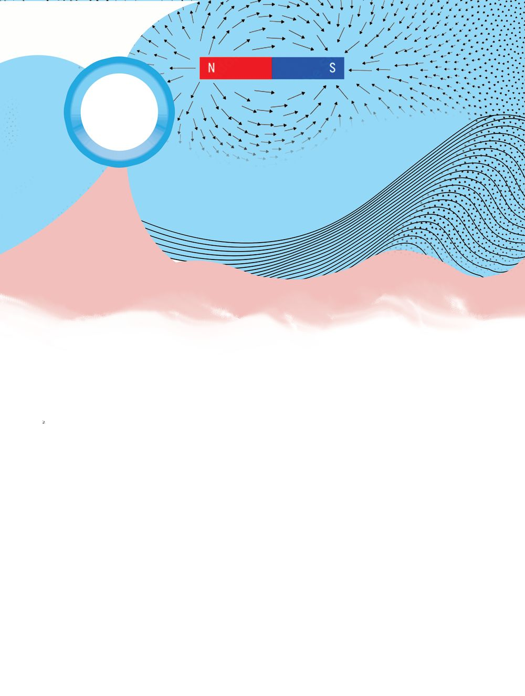
അടി-ÿാന-ശാസ്ത്രം ˛ ഢക
$ ഏ‰വും കൂടുതൺ ഊയ്യജം ഉ≈ അവÿ ഇവയിൺ ഏതാണ്? $ ഏ‰വും കുറ™ ഊയ്യജം ഏത് അവ-ÿ-യ്ത്ഥാണ്? എെസ്പാവ നിയ്യമിത്ഥാം താഴെ∏റയുന്ന ആവശ്യത്മƒത്ഥായി പദായ്യഥത്മളുടെ അവ-ÿാമാ-‰-ത്മളെ നിത്മƒത്ഥ് എത്മനെ പ്രയോജ-ന-∏െടുസ്ഥാനാവും? ക്ലാസിൺ ചയ്യണ്ണചെ-øൂ
$ $
മെഴുകുകൊ≠് കോഴിമുന്തയുടെ മാതൃക പ്രദയ്യശന-സ്ഥിനായി ഉ≠ാത്ഥണം.
$
മെഴുകുപാവകƒ ഉ≠ാത്ഥണം.
എെസ് കൊ≠് ഒരു പഗ്ല് ഉ≠ാത്ഥി ചരടിൺ തൂത്ഥിയിട-ണം.
ഗ്രൂ∏ിൺ ചയ്യണ്ണചെയ്ത് ഇതിനു≈ മായ്യഗത്മƒ ക≠െസ്ഥാ≥ ശ്രമിത്ഥൂ. ആകയ്യഷകമായ രൂപത്മളു≠ാത്ഥി സ്കൂƒ ശാസ്ത്രക്ല∫ിൺ പ്രദയ്യശി-∏ിത്ഥൂ. പദായ്യഥത്മളുടെ അവ-ÿാമാ-‰-ത്മƒ പ്രയോജ-ന-∏െടുസ്ഥി രസക-രമായ പ്രവയ്യസ്ഥന-ത്മƒ ആസൂത്രണം ചെøൂ.
അവÿാമാ‰-മാണ് ഞത്മƒത്ഥ് ഈ മനോഹര രൂപത്മƒ നൺകിയ-ത്.
നിത്യജീവിത-സ്ഥിലെ ചില സμയ്യഭത്മƒ പന്തിക-യിൺ കൊടുസ്ഥിരിത്ഥുന്നത് പരിശോധിത്ഥൂ. സμയ്യഭം
അവ-ÿ-യിലോ രൂപസ്ഥിലോ ഉ≠ാവുന്ന മാ‰ം
ഉറണ്ണ നെø് ചൂടാത്ഥുന്നു.
ഉരുകുന്നു.
പണ്ണത്ഥറി മുറിത്ഥുന്നു.
ചെറിയ -കഷ-ണത്മളാവുന്നു.
പി.വി.-സി. പൈ∏് ചൂടാത്ഥുന്നു.
വികസിത്ഥുന്നു.
മെഴുക് ചൂടാത്ഥുന്നു.
ഉരുകുന്നു.
പേ∏യ്യ കീറുന്നു.
ചെറിയ -കഷ-ണത്മളാവുന്നു.
കു∏ി പൊന്തുന്നു.
ചെറിയ -കഷ-ണത്മളാവുന്നു.
അരത്ഥ് ചൂടാത്ഥുന്നു.
ഉരുകുന്നു.
പേ∏യ്യ ചുരുന്തുന്നു.
ആകൃതി മാറുന്നു.
25


അടി-ÿാനശാസ്ത്രം ˛ ഢക പന്തിക അപഗ്രഥിണ്ണ് ഇസ്ഥരം മാ‰-ത്മളുടെ സവിശേഷ-തകƒ ക≠െസ്ഥി എഴുതൂ. താഴെകൊടുസ്ഥ സൂചനകƒ പ്രയോജ-ന-∏െടുസ്ഥുമ-√ോ.
$ $ $ $
ഏതെന്നിലും സμയ്യഭസ്ഥിൺ പുതിയ പദായ്യഥം ഉ≠ാവുന്നു≠ോ? അവ-ÿ-യിലു-≠ാവുന്ന മാ‰-ത്മƒ ഏതെ-√ാമാണ്? ആകൃതിയിൺ മാ‰-ത്മƒ വരുന്നവ ഏതാണ്? വലു∏-സ്ഥിൺ മാ‰-ത്മƒ വരുന്നവ ഏതെ√ാം?
ഭൗതികമാ‰ം (ജവ്യശെരമഹ ഇവമിഴല) അവ-ÿ, ആകൃതി, വലു∏ം എന്നീ ഭൗതികഗുണത്മളിൺ വരുന്ന -മാ-‰-ത്മളാണ് ഭൗതിക-മാ-‰-ത്മƒ. വികസിത്ഥുന്നതും ഉരുകുന്നതും പൊന്തുന്നതും കീറുന്നതും എ√ാം ഭൗതികമാ‰-ത്മളാണ്. ഭൗതിക-മാ-‰-ത്മƒ മൂലം പുതിയ പദായ്യഥത്മƒ ഉ≠ാവുന്നി-√.
ÿിരമായ മാ‰ം എ√ാ മാ‰-ത്മളും ഭൗതികമാ‰-ത്മളാണോ? ഈ പ്രവയ്യസ്ഥന-ത്മƒ ചെøാം. സ്പൂണിൺ അൺ∏ം പഞ്ചസാര എടുസ്ഥ് ഉരുകുന്നതുവരെ ചൂടാത്ഥൂ. മാ‰-ത്മƒ നിരീക്ഷിത്ഥൂ. ചൂടാത്ഥിയശേഷം രുചിണ്ണു നോത്ഥൂ. എഗ്ലു രുചിയാണ് അനുഭ-വ-∏െന്തത്? വീ≠ും ചൂടാത്ഥൂ. നിറം മാറുന്നി-√േ? തണുസ്ഥ ശേഷം രുചി പരിശോധിത്ഥൂ. ഇ∏ോƒ അതി‚െ രുചി എഗ്ലാണ്? സ്പൂണിൺ അവശേഷിത്ഥുന്ന പദായ്യഥസ്ഥിന് പഞ്ചസാര-യുടെ ഗുണത്മƒ ഉ≠ോ? മെഴുക് ചൂടാത്ഥിയ-∏ോഴും പഞ്ചസാര ചൂടാത്ഥിയ-∏ോഴും ഉ≠ായ മാ‰-ത്മളിൺ എഗ്ലു വ്യത്യാസമാണ് നിത്മƒത്ഥ് ക≠െസ്ഥാനായത്? പന്തിക പൂയ്യസ്ഥിയാത്ഥി ശാസ്ത്രപുസ്തക-സ്ഥിൺ ചേയ്യത്ഥൂ.
26
മെഴുക് ചൂടാത്ഥുബ്ബോƒ
പഞ്ചസാര ചൂടാത്ഥുബ്ബോƒ
താപം സ്വീകരിത്ഥുന്നു.
..........................................................
..........................................................
ഉരുകുന്നു.
..........................................................
നിറം മാറുന്നു.
പുതിയ പദായ്യഥം ഉ≠ാവുന്നി√.
..........................................................

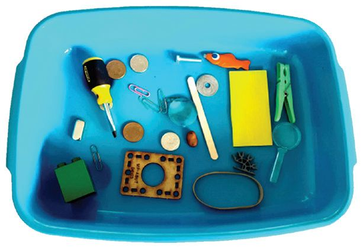
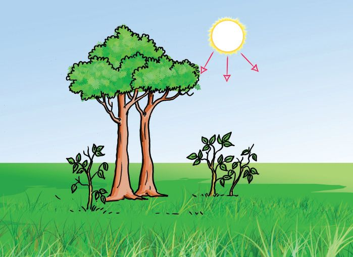
അടി-ÿാന-ശാസ്ത്രം ˛ ഢക ചില പരീക്ഷണ-ത്മƒകൂടി ചെøാം. 1.
മഗ്നീഷ്യം റിബച്ച കസ്ഥിത്ഥുക.
2.
പേ∏യ്യ കസ്ഥിത്ഥുക.
മഗ്നീഷ്യം റിബണും പേ∏റും കസ്ഥിണ്ണ-∏ോƒ ലഭിണ്ണ വസ്തുത്ഥളെ ആദ്യരൂപ-സ്ഥിലേത്ഥു തന്നെ മാ‰ാ≥ കഴിയുമോ? നിരീക്ഷണ-ത്മളും ക≠െസ്ഥലുകളും ശാസ്ത്രപുസ്തക-സ്ഥിൺ ചേയ്യത്ഥൂ.
രാസമാ‰ം (ഇവലാശരമഹ രവമിഴല) പദായ്യഥത്മƒ ഊയ്യജം സ്വീകരിത്ഥുകയോ പുറസ്ഥുവിടുകയോ ചെയ്ത് പുതിയ പദായ്യഥത്മളായി മാറുന്ന പ്രവയ്യസ്ഥന-ത്മളാണ് രാസമാ-‰ത്മƒ. രാസമാ‰ം ÿിരമാ-‰-മാണ്.
ഇസ്ഥരം വസ്തുത്ഥƒ താപം സ്വീകരിത്ഥുന്നതു വഴി ഉ≠ാവുന്ന മാ‰സ്ഥെത്ഥുറിണ്ണ് നിഗമനം രൂപീക-രിത്ഥൂ. വായനസാമഗ്രികൂടി പ്രയോജ-ന-∏െടുസ്ഥണം.
രാസമാ-‰-ത്മƒ പലതരം മനുഷ്യശ-രീര-സ്ഥിലും പ്രകൃതിയിലും നിതേ്യന ഒന്തേറെ രാസമാ-‰-ത്മƒ നടത്ഥുന്നു≠്. കൂടുതൺ ഉദാഹ-രണ-ത്മƒ ക≠െസ്ഥി ശാസ്ത്രപുസ്തക-സ്ഥിൺ എഴുതൂ. താഴെത്ഥൊടുസ്ഥ സൂചന-കƒ പ്രയോജ-ന-∏െടുസ്ഥുമ√ോ.
$ $ $ $
ചോറ് അൺ∏നേരം നന്നായി ചവയ്ത്ഥുബ്ബോƒ മധുരം അനുഭ-വ-∏െടുന്നു.
$
മാത്മ പഴുത്ഥുന്നു.
എക്സ്റേ എടുത്ഥുബ്ബോƒ ഫിലിമി‚െ നിറം മാറുന്നു. വസ്ത്രത്മƒ വെയിലേ‰് നിറം മത്മുന്നു. ഇരുബ്ബു കബ്ബികƒ തുരുബ്ബെടുത്ഥുന്നു.
ചിത്രം ചെøൂ.
വിശ- ക - ല നം
$
ചിത്രസ്ഥിൺ സൂചി∏ിണ്ണ രാസ- മ ആ‰ം ഏതാണ്?
$
ഈ രാസമാ‰വേളയിൺ നട- ത്ഥ ഉന്ന ഊയ്യജമാ‰ം എഴുതൂ.
27


അടി-ÿാനശാസ്ത്രം ˛ ഢക താഴെ കൊടുസ്ഥ ചിത്രം നിരീക്ഷിത്ഥൂ. എഗ്ലെ√ാം ഭൗതികമാ‰-ത്മളാണ് ചിത്രസ്ഥിൺ നിന്നു ക≠െസ്ഥാനാവുക?
നിത്യജീവിത-സ്ഥിൺ ധാരാളം രാസമാ-‰-ത്മളും ഭൗതിക-മാ-‰-ത്മളും നാം പ്രയോജ-ന-∏െടുസ്ഥുന്നു-≠്. ഒരു ദിവസം അടുത്ഥള-യിൺ നടത്ഥുന്ന എത്ര- രാസ-മാ-‰-ത്മളും ഭൗതിക-മാ-‰ത്മളും നിത്മƒത്ഥ് പന്തിക-∏െടുസ്ഥാ≥ കഴിയും? തരം -തിരിണ്ണ് രേഖ-∏െടുസ്ഥൂ.
$
വിവിധ ഊയ്യജരൂപ-ത്മƒത്ഥും അവ ഉപയോഗിത്ഥുന്ന ജീവിതസμയ്യഭത്മƒത്ഥും ഉദാഹരണത്മƒ നൺകാ≥ കഴിയുന്നു.
$ $
വിവിധ ജീവിതസμയ്യഭത്മളിൺ നടത്ഥുന്ന ഊയ്യജമാ‰-ത്മƒ വിശദീക-രിത്ഥാ≥ കഴിയുന്നു.
$ $
രാസമാ‰ം, ഭൗതിക-മാ‰ം എന്നീ ആശയ-ത്മƒ വിശദീക-രിത്ഥാ≥ കഴിയുന്നു.
$
ഊയ്യജമാ-‰-വുമായി ബ'-∏െന്ത പരീക്ഷണ-ത്മളിൺ ഏയ്യ∏െടാനും ഉപക-രണ-ത്മƒ കൈകാര്യം ചെøാനും കഴിയുന്നു.
28
പദായ്യഥത്മളുടെ താപനില-യിലു-≠ാവുന്ന വ്യത്യാസം അവ-ÿാമാ-‰-സ്ഥിനു കാരണമാവുന്നു എന്ന് തിരിണ്ണറി™് വിശദീക-രിത്ഥാ≥ കഴിയുന്നു.
മെഴുക്, എെസ് തുടത്മിയവ ഉപയോഗിണ്ണ് കൗതുക-വസ്തുത്ഥƒ നിയ്യമിത്ഥാ≥ കഴിയുന്നു.

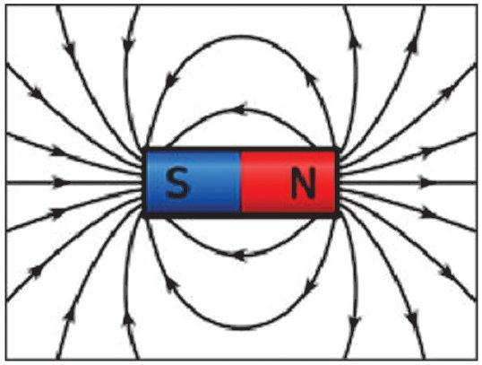
അടി-ÿാന-ശാസ്ത്രം ˛ ഢക
1.
2.
3.
""നീരാവികൊ≠ു≈ പൊ≈ൺ അതേ താപനില-യിലു≈ തിളണ്ണവെ≈ം മൂലമു≈ പൊ≈-ലിനേത്ഥാƒ മാരക-മാണ്.'' $ ഈ പ്രസ്താവ-നയോട് നിത്മƒ യോജിത്ഥുന്നു≠ോ? $ ഭൗതികമാ‰സ്ഥെ ആസ്പദ-മാത്ഥി ഈ പ്രസ്താവ-നയെ ന്യായീക-രിത്ഥൂ. ബƒബ് പ്രകാശിത്ഥുബ്ബോƒ പ്രകാശ-സ്ഥോടൊ∏ം താപം പുറസ്ഥുവ-രുന്നതു നാം മന ഇലാത്ഥിയ√ോ. $ വൈദ്യുതോയ്യജസ്ഥി‚െ ഉപഭോഗം പരമാവധി കുറയ്ത്ഥാ≥ ഫിലമെ‚ ് ബƒബുകളേത്ഥാƒ ന√ത് ഘഋഉ ആണ്. വിശദീക-രിത്ഥാമോ? $ താപം ലഭിത്ഥുന്നതിന് ഫിലമെ‚ ് ബƒബ് ഉപയോഗിത്ഥുന്ന സμയ്യഭത്മƒ ഉ≠ോ? ഉദാഹ-രണ-ത്മƒ നൺകൂ. തുലാവയ്യഷസ്ഥിൺ ശ‡-മായ ഇടിയോടുകൂടി മഴപെ-øുക-യാണ്. ഊയ്യജമാ-‰-ത്മƒ പഠിണ്ണ റഹീമും ദീപയും ഇതുമായി ബ'-∏െന്ത് നടസ്ഥിയ ഒരു കളി -നോത്ഥൂ. ഒരാƒ സμയ്യഭം പറയുബ്ബോƒ മ‰േയാƒ ഊയ്യജമാ‰ം പറയുകയാണ്. വിന്തഭാഗം പൂരി-∏ിത്ഥൂ. ദീപ റഹീം മഴപെ-øുന്നു. മേഘം താപം പുറസ്ഥു- വിടുന്നു. ............................................... മേഘം ഉ≠ാവുന്നു. ശബ്ദോയ്യജം ഉ≠ാവുന്നു. ............................................... ............................................... പ്രകാശോയ്യജം പുറസ്ഥു- വരുന്നു. വൈദ്യുതോയ്യജം ഉ≠ാവുന്നു. ...............................................
1.
വൈദ്യുതോയ്യജം രാസോയ്യജമായി സംഭരിണ്ണ് ഉപയോഗിത്ഥുന്ന ഏതെ√ാം സμയ്യഭത്മƒ നിത്മƒത്ഥു ക≠െസ്ഥാനാവും? 2. യാഗ്ല്രികോയ്യജസ്ഥെ വൈദ്യുതോയ്യജമാത്ഥാനായി ഒരു ചെറിയ ജനറേ-‰യ്യ നിത്മƒത്ഥും നിയ്യമിത്ഥാം. ആവശ്യമായ സാമഗ്രികƒ : മിനിമോന്തോയ്യ, കനം കുറ™ വയയ്യ ര≠ു കഷണം, ഘഋഉ (കുറ™ വോƒന്ത് ഉ≈ത്). നിയ്യമാണരീതി: മിനിമോന്തോയ്യ ബാ‰-റിയിലേത്ഥു ബ'ി-∏ിത്ഥുന്ന ടെയ്യമിന-ലുകƒ ര≠ു വയയ്യ ഉപയോഗിണ്ണ് ഘഋഉ യുമായി ബ'ി-∏ിത്ഥുക. മിനിമോന്തോറി‚െ പുറസ്ഥേത്ഥ് നിൺത്ഥുന്ന ഷാഫ്‰് കൈകൊ≠് ശ‡മായി തിരിണ്ണുനോത്ഥൂ. ഘഋഉ തെളിയുന്നതു കാണാം. മേശയിലോ ബെഞ്ചിലോ ഷാഫ്‰് തിരിയ-സ്ഥത്ഥവിധം മിനിമോന്തോയ്യ ഉരസുന്നതു ഘഋഉ നന്നായി പ്രകാശിത്ഥുന്നതിന് സഹായിത്ഥും. 29